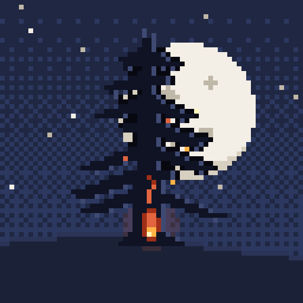
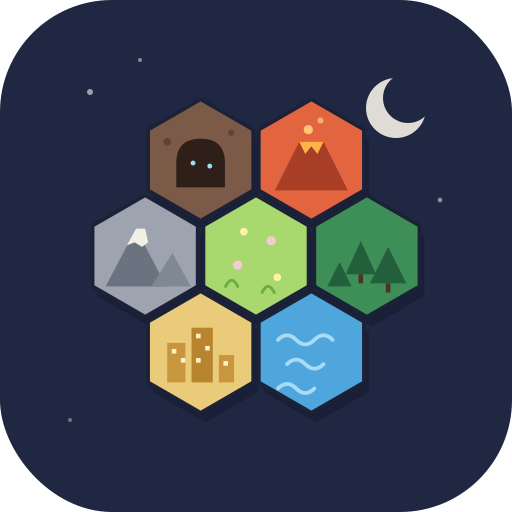

El Pino Calcinado
Una posada de montaña para Pokémon viajeros. Manolo, su Charizard y la chistorra. Cachimbita, chistorra y a dormir.
Jugar
Pokéromantik
Un puzle tranquilo de losetas hexagonales: forma paisajes de Kanto y atrae Pokémon a vivir en ellos. Las regiones grandes se llenan de pueblos, cuevas y gimnasios.
Jugar